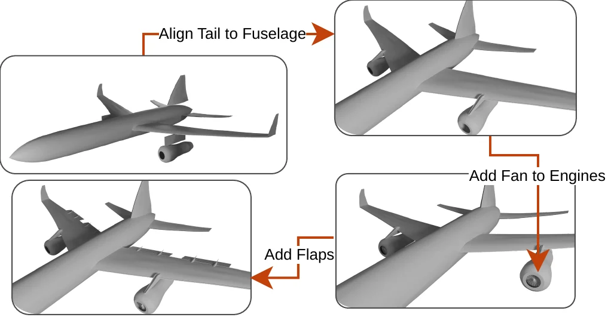

Organic and mechanical objects alike
Other LLM-based 3D generators are limited either to the kinds of objects they were trained on or to a fixed set of building blocks. SurfScaff3D needs neither: the LLM brings its knowledge of what objects look like, and HPS lets it write any surface as labelled B-spline patches, so one pipeline makes both organic and mechanical objects.
Explore some of our objects in 3D ↓

Edits go to the part you name
Every part of an object has a name, such as the engine or the wing, so an instruction like “add fans to the engines” changes only the engines and leaves the rest untouched. You can also guide the object yourself, one instruction at a time. The image on the left shows an airplane edited this way in three steps: align the tail with the fuselage, add fans to the engines, then add flaps.
Step through an edit chain ↓